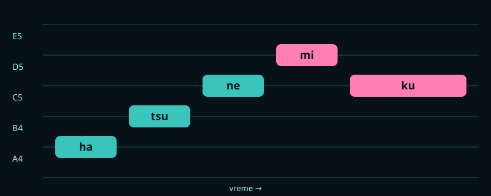
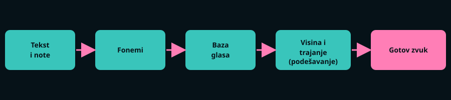

1. ŠTA KORISNIK UNOSI?
Hatsune Miku se koristi kao muzički program. Autor pesme unosi dve stvari:
- note – koliko je ton visok (visina) i koliko traje,
- tekst – koji slog se peva na kojoj noti.
To se radi u editoru koji liči na klavirski prikaz: svaka nota je jedna horizontalna traka, a unutar nje se upisuje slog teksta.

2. ŠTA RAČUNAR RADI KORAK PO KORAK?
- Tekst se pretvara u foneme. Program razlaže reči na najmanje glasovne jedinice (na primer „mi“ postaje glasovi m i i).
- Traži se baza glasa. U njoj su unapred snimljeni glasovi prave pevačice: kratki delovi izgovorenih glasova i njihovih prelaza.
- Delovi se biraju i spajaju. Program lepi isečke glasova jedan za drugim da bi dobio traženi slog.
- Visina se prilagođava noti. Isečak se menja tako da zvuči upravo na toj frekvenciji (npr. 440 Hz za noti A).
- Trajanje se rasteže ili skraćuje. Samoglasnik se produžava onoliko koliko nota traje.
- Dodaju se detalji pevanja. Vibrato, jačina, svetlina boje glasa i glatki prelazi između nota.
- Rezultat je zvučni zapis koji se pušta, snima ili uključuje u pesmu.

ZAŠTO ZVUČI KAO PEVAČICA, A NE KAO ROBOT?
Zato što se ne generiše „veštački“ glas ispočetka. Osnova su stvarni snimci ljudskog glasa. Računar ih samo preuređuje: menja visinu, trajanje i način spajanja, a boja glasa ostaje ljudska.
3. KAKO SE NOTA PRETVARA U FREKVENCIJU?
Svaka nota ima svoju frekvenciju, odnosno broj treptaja zvučnog talasa u sekundi (meri se u hercima, Hz). Kada se nota pomeri za oktavu naviše, frekvencija se udvostruči. Računar broji note kao brojeve (MIDI broj), a frekvencija se računa formulom:
f = 440 × 2(n − 69) / 12Ovde je n broj note (nota A četvrte oktave ima broj 69), a f frekvencija u hercima.
| Nota | MIDI broj | Frekvencija (Hz) |
|---|---|---|
| C4 (do) | 60 | 261,63 |
| E4 (mi) | 64 | 329,63 |
| G4 (sol) | 67 | 392,00 |
| A4 (la) | 69 | 440,00 |
| C5 (do, oktavu više) | 72 | 523,25 |
4. ŠTA SVE AUTOR MOŽE DA PODESI?
Isti tekst i iste note mogu zvučati potpuno drugačije u zavisnosti od podešavanja. Zato dve pesme sa istim glasom ne zvuče isto.
| Parametar | Šta menja |
|---|---|
| Jačina (dinamika) | Da li se peva tiho i nežno ili glasno i snažno |
| Vibrato | Lagano treperenje tona, kao kod pravih pevača |
| Svetlina | Da li glas zvuči „oštrije“ ili „mekše“ |
| Prelazi visine | Koliko glatko glas klizi od jedne note do druge |
| Izgovor | Kako se izgovara pojedini slog (jasno, uz dah, promukli glas…) |
SLEDEĆE PITANJE
Kada je sve ovo jasno, ostaje pitanje zašto je upravo ovaj glas postao poznat. Odgovor je na sledećoj strani.